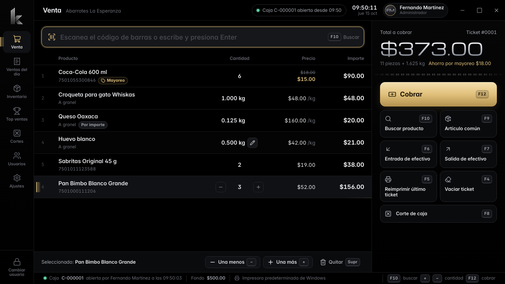

Venta a granel
Escribe .5 para medio kilo o 250g. O el importe: “deme 20 pesos de queso” y KOBRIX calcula el peso.
KOBRIX es el punto de venta para abarrotes, tiendas y negocios de mostrador. Escaneas, cobras con una tecla e imprimes el ticket. Vende por pieza o a granel, aplica mayoreo solo, controla tu inventario y cierra la caja con un corte claro. Todo en tu computadora, sin internet.

Cada acción tiene su tecla y funciona desde cualquier pantalla. El lector de código de barras escribe, KOBRIX agrega el producto, y una tecla cobra. Toca una tecla para ver qué hace.
Abre la ventana de cobro con el total, pide con cuánto paga el cliente y calcula el cambio. Ahí mismo F1 registra e imprime el ticket, F2 solo registra y F3 aplica un descuento.
Una sola licencia por computadora incluye todo: venta, inventario, cortes, reportes, usuarios con permisos y tickets con tu logo.
Escribe .5 para medio kilo o 250g. O el importe: “deme 20 pesos de queso” y KOBRIX calcula el peso.
Marca desde cuántas piezas o kilos aplica el precio de mayoreo. En la venta se aplica solo y el ticket muestra el ahorro.
Un cliente fue por algo más: F2 guarda su venta, cobras al siguiente y con F2 regresas a ella. Nada se pierde.
Fondo inicial, ventas por forma de pago, entradas, salidas y diferencia. Corte parcial sin cerrar la caja e impresión en ticket.
Decide quién cambia precios, da descuentos o cancela. Si no tiene permiso, KOBRIX pide tu PIN en el momento y lo anota en la bitácora.
Existencias que bajan con cada venta, aviso de stock bajo y de productos próximos a caducar en lácteos, pan y embutidos.
Lo vendido por día o por rango de fechas, separado en piezas y kilos. Cada ticket, cada producto, devoluciones y cortes.
Imprime en cualquier impresora térmica de 58 u 80 mm instalada en Windows, con el logo y los datos de tu negocio.
La interfaz siempre es negra. El color de acento pinta los botones, la selección y las cifras destacadas. KOBRIX trae cinco y se cambian en Ajustes > Apariencia. Pruébalos aquí: toda la página cambia contigo.
Abre el instalador. No pide permisos de administrador y deja el acceso directo en el escritorio. Si ya tenías KOBRIX, tus datos se conservan.
Un asistente pide el nombre del negocio, el administrador con su PIN de 4 a 6 números y tus cajeros. Registra tus productos escaneándolos.
Prueba 15 días con todo. Para activar, manda el código de tu equipo a tu distribuidor y pega la licencia que te devuelve.
ABCD-EFGH-JKLMLa licencia se activa una sola vez por computadora y no se puede copiar a otra. Si cambias de equipo, la quitas de uno y la activas en el nuevo.
No. KOBRIX guarda todo en tu computadora: ventas, productos, usuarios y cortes. Solo necesitas internet para descargarlo.
KOBRIX hace una copia automática cada día. Además, en Ajustes > Respaldos guardas un respaldo completo en una memoria USB y lo restauras en otra computadora.
Mantén presionada la tecla Fn (Fn + F12) o activa el bloqueo Fn, que en muchas laptops es Fn + Esc. También puedes cobrar con Ctrl + Enter, buscar con Ctrl + B y reimprimir con Ctrl + P.
Sí, si tu impresora está instalada en Windows (POS-58, Epson TM-T20 y similares) y tu lector es USB tipo teclado, como casi todos. En Ajustes puedes imprimir una prueba y probar el lector.
Sí. Cualquier usuario hace e imprime el corte de caja. Tú decides si el cajero puede ver cuánto efectivo debería haber, para que cuente a ciegas.
KOBRIX se descarga en un archivo comprimido (.zip). Windows ya trae cómo abrirlo: no necesitas instalar WinRAR ni nada más. Sigue los pasos y mira en la pantalla dónde dar clic.
Microsoft Defender SmartScreen impidió el inicio de una aplicación no reconocida. Si ejecutas esta aplicación, podrías poner en riesgo tu PC.
Más información
Aplicación: KOBRIX-Instalador-2.0.4.exe
Editor: Editor desconocido
Se instalará KOBRIX Punto de Venta 2.0.4 en esta computadora.
Si ya tenías KOBRIX instalado, tus ventas, productos y usuarios se conservan.
Haz clic en Siguiente para continuar.
Da clic en “Descargar KOBRIX 2.0.4”. Se baja el archivo KOBRIX.zip (61 MB) a tu carpeta Descargas. Espera a que termine.
Si tu navegador pregunta qué hacer con el archivo, elige “Guardar” o “Conservar”.Se descarga KOBRIX.zip. Clic derecho > Extraer todo y abre KOBRIX-Instalador-2.0.4.exe. Ver la guía con imágenes.